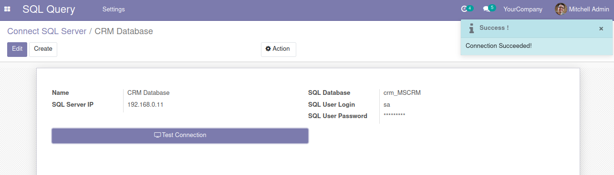
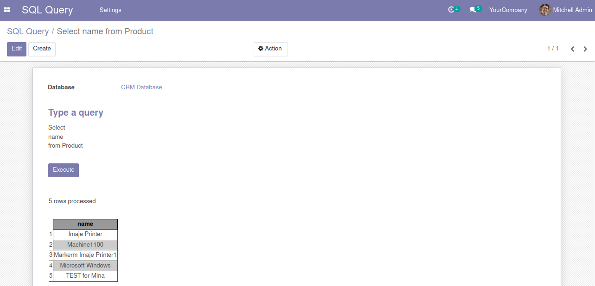

Explore your MS SQL database with query into an Odoo interface
You can use SELECT, UPDATE, DELETE, CREATE, INSERT, ALTER and DROP statements.
Refer the link
pip install pyodbc
Go to Settings --> Users
Go to SQL Query --> Settings --> SQL Connection
Create New Connection
Go to SQL Query
Create New Query
